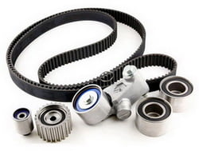
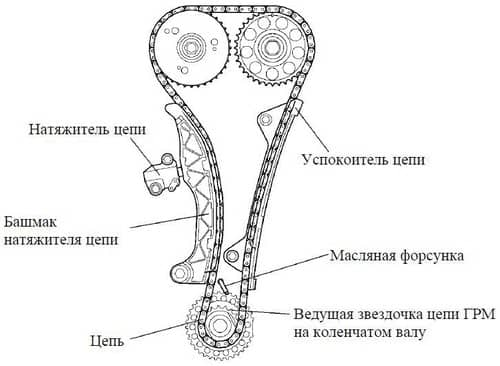
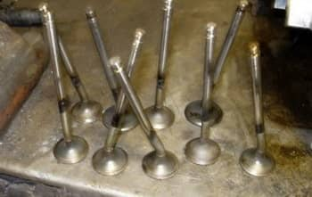
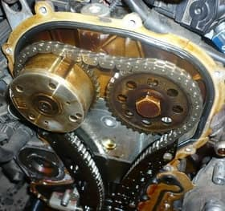

CТО
CТО
Капелла
ВНИМАНИЕ! Мы переехали!!!
Наш новый адрес:
ЧЕСТНЫЙ ремонт автомобилей в Минске в рассрочку.
Замена ремня ГРМ, замена цепи ГРМ, замена роликов, масляного насоса (водяной помпы), натяжителя, успокоителя цепи, замена ручейкового ремня, поликлинового ремня, устранение последствий обрыва ремня или цепи ГРМ и многое другое на СТО в Минске.
Официальная гарантия на все работы.
ВЫ ПЛАТИТЕ ТОЛЬКО ЗА РЕЗУЛЬТАТ!
Звоните ежедневно
с 9 до 20 часов!
 +375 (33) 600 23 47
+375 (33) 600 23 47
 +375 (29) 627 49 07
+375 (29) 627 49 07
или напишите свой вопрос на Viber
 +375 29 627 49 07
+375 29 627 49 07
 РАССРОЧКА на 6 месяцев!!!
РАССРОЧКА на 6 месяцев!!!
Ремонт авто сегодня, оплата потом!
Оцените нас:
 Аббревиатура ГРМ расшифровывается как "газораспределительный механизм". Этот механизм включает в себя совокупность таких деталей как: ремень или цепь ГРМ, привод распредвала и сам распредвал, впускные и выпускные клапаны, толкатели, коромысла, натяжитель, успокоитель цепи и др. Механизм ГРМ обеспечивает синхронизацию распредвала и коленвала. Иными словами, он предназначен для своевременной подачи топлива в цилиндры и выпуска отработавших газов из них. Без него невозможна нормальная работа двигателя и вообще движение автомобиля. Ремень / цепь ГРМ также приводит в действие водяную помпу (водяной насос), который, в свою очередь, обеспечивает циркуляцию охлаждающей жидкости в системе охлаждения. В современных автомобилях ремень ГРМ находится в передней части двигателя между блоком цилиндров и радиатором. Как правило, чтобы добраться до него потребуется снять пару пластиковых защит.
В отличие от ремня, цепь с шестернями, натяжителем и успокоителем расположена внутри двигателя. С одной стороны, это хорошо: шум от работы цепи меньше слышен и сам механизм лучше смазывается моторным маслом, что значительно увеличивает ресурс его работы. С другой стороны, чтобы оценить техническое состояние цепи необходимо снимать клапанную крышку. Неполадки цепи ГРМ можно определить по характерному рокочущему звуку, доносящемуся из-под клапанной крышки двигателя.
Вот некоторые симптомы неполадок с цепью ГРМ:
- смещение фаз газораспределения из-за перескакивания цепи на 1—2 зуба в результате прослабления. Двигатель при этом плохо заводится и сильно вибрирует. Ощущается потеря мощности двигателя. При резком нажатии на педаль газа слышны выстрелы;
- при смещении цепи на 3 зуба, двигатель уже не заведётся. Но подобные ситуации встречаются редко, так как слишком ослабленная цепь проскакивает намного больше. Как результат — это удар поршнем по открывшемуся клапану.
 При разрыве цепи ГРМ размер ущерба во многом зависит от момента, когда произошел разрыв. Если в момент разрыва клапаны были закрыты, то поршни, не достанут до них. Если цепь перескочила или оборвалась во время движения авто, то Вы сразу почувствуете потерю мощности и произойдет полный отказ двигателя. Если при этом Вы услышали металлический стук, то это означает, что поршни встретились с клапанами. В таком случае приготовьтесь к дорогостоящему ремонту двигателя. Похожие последствия наступают и при обрыве ремня ГРМ.
У каждого автомобиля есть установленные производителем сроки замены ремня или цепи ГРМ и сроки эти необходимо соблюдать, чтобы не довести двигатель до дорогого по цене ремонта, так как при обрыве ремня или цепи самое меньшее, что может произойти - это загиб клапанов (см. рисунок слева). В этом случае понадобится демонтаж ГБЦ и, соответственно, замена клапанов. При обрыве ремня на холостых оборотах, скорее всего потребуется замена 3-4 клапанов, а если обрыв произойдет на включенной передаче, то, скорее всего, заменить придется все клапаны. И это, повторю, наименьшее из зол. Иногда ремонту подлежит весь ГБЦ, так как повреждения получают не только поршни, но и другие элементы блока. Точнее, при обрыве ремня распределительный вал останавливается в одном положении, а коленвал продолжает крутиться. При этом поршни начинают бить по открытым клапанам, и гнут их. Самые серьёзные последствия от разрыва ремня ГРМ возникают у дизельных двигателей. В результате обрыва ремня в дизельных двигателях повреждения получают распределительный вал и его подшипники, толкатели и происходит деформация шатунов и, как результат, ремонт всего блока цилиндров. Поэтому не надо стремиться выжать из ремня ГРМ весь его ресурс до последнего. Не доводите до дорогостоящего ремонта двигатель. После 20-30 тысяч километров пробега авто, начинайте чаще осматривать ремень и при появлении малейших признаков его повреждения или значительного износа, замените ремень на СТО. Лучше лишний раз поменять ремень, чем заплатить огромную цену за ремонт двигателя.
 Двигатели современных автомобилей имеют большой крутящий момент, поэтому любой обрыв цепи или ремня ГРМ в 90% случаев приведет к выходу из строя группы клапанов, а также другим серьезным повреждениям двигателя автомобиля. Поэтому не нужно обладать какими-то особенными познаниями в области автомобильных двигателей, чтобы понять, что своевременная замена ремня ГРМ по цене обойдется гораздо дешевле, чем стоимость капитального ремонта всего двигателя автомобиля. Поэтому регулярно проводите осмотр ремня и, как только вы обнаружите его провисание или какие-то повреждения, без лишних отлагательств отправляйтесь на СТО для замены ремня. Также необходимо следить за периодичностью замены ремней или цепи ГРМ, роликов, помпы и натяжителя, установленной заводом-изготовителем. Не допускайте попадание на ремень масла или других смазочных материалов (может произойти проскальзывание ремня с тяжелыми последствиями), песка (его крупинки разрушают зубья ремня). Кожух ремня ГРМ обязательно должен быть плотно закрыт защищая ремень от попадания на него грязи и воды.
Доверьте замену ремня ГРМ специалистам нашей СТО в Минске, так как это процедура требует определенных знаний и опыта. Неправильно установленный ремень даст о себе знать на больших оборотах и под нагрузкой - на подъеме или больших скоростях - при этом ощущается потеря мощности двигателя. Так же неправильно установленный ремень ГРМ может проявляться в плохом зажигании, так как ремень синхронизирует работу поршней и клапанов. Поэтому, при самостоятельной установке ремня ГРМ, строго соблюдайте точное совмещение меток ремня и шкивов. И если ремень еще Вы можете все-таки как-то самостоятельно заменить, то замену цепи ГРМ лучше доверить знающим опытным специалистам СТО, желательно нашей СТО "КапеллаПлюс" в Минске.
При выборе ремня ГРМ не стоит экономить на его цене. От качества изготовления ремня напрямую зависит продолжительность его службы. Внимательно смотрите характеристики ремня при его покупке. Важные параметры, определяющие принадлежность ремня к модели Вашего автомобиля это количество зубьев ремня, его диаметр, ширина.
Мы осуществляем замену цепи и ремня ГРМ, а так же ремонт двигателя и группы клапанов в результате обрыва ремня или цепи ГРМ легковых автомобилей, минивэнов и микроавтобусов с возможностью оплаты в рассрочку по картам рассрочки.
Замена ремня ГРМ: цена услуги начинается от 60 руб. и может стоить не дороже 200 руб.
Замена цепи ГРМ (а так же роликов, успокоителя и натяжителя цепи): цена услуги начинается от 200 руб. и для некоторых моделей может достигать 1200 руб.
Цена на замену ГРМ во многом зависит от модели авто ввиду различных конструктивных особенностей двигателей, поэтому, пожалуйста, уточняйте стоимость той или иной услуги у нашего мастера по телефону, через Viber или посредством отправки запроса по форме внизу этой страницы. Мы рады любому Вашему обращению к нам, а мы постараемся чтобы наши цены и условия оплаты Вас приятно удивили.
Цена работ по замене ремня или цепи ГРМ у нас на СТО в Минске, при оплате одной из указанных ниже карт рассрочки, превратиться для Вас во вполне доступную, так как, в отличие от других СТО города Минска, мы предоставим Вам рассрочку на 6 месяцев позволяющую Вам оплачивать ту же стоимость работ, но равными частями на протяжении полугода без каких-либо переплат.
Мы можем самостоятельно приобрести комплект ремня или цепи ГРМ для замены. Обратите внимание! Оплачивая стоимость работ по замене ГРМ любой из указанных карт рассрочки, Вы оплачиваете всю стоимость работ включая расходные материалы в РАССРОЧКУ! И это действительно ВЫГОДНО!
На ВСЕ РАБОТЫ, выполняемые у нас на СТО в Минске, для держателей карт рассрочки "Карта покупок", "SMART Карта", "Карта FUN" или "МАГНИТ" действует РАССРОЧКА на 6 месяцев. Цены на услуги при оплате в рассрочку не меняются. Если у Вас нет карты рассрочки, то оформить ее можно через интернет в кратчайшие сроки без особых проблем. Ссылки на страницы банков для оформления карт рассрочки Вы найдете на главной странице нашего сайта здесь.
На ремонт и замену ремня или цепи ГРМ мы предоставляем ОФИЦИАЛЬНУЮ ГАРАНТИЮ. Но даже по ее истечении мы не бросаем своих клиентов и, если гарантийный случай наступил не в результате естественного износа, а по вине нашей СТО, то мы исправим и заменим вышедшие из строя части за свой счет. ВНИМАНИЕ!!! Мы даем гарантию только на услуги по ремонту автомобиля. Гарантия на запчасти устанавливается продавцом или изготовителем запчастей отдельно. В любом случае, мы всегда найдем компромисс в решении возникшей проблемы.
Если наступила пора заменить ремень, цепь или весь комплект ГРМ вместе с помпой, роликами и натяжителями цепи в Вашем автомобиле, то Вы можете узнать цену на работы по замене ГРМ или другой услуги по ремонту авто на нашей СТО, а так же оставить заявку или задать иной вопрос нашему мастеру на  +375 (29) 627-49-07 или оставьте свой номер телефона в поле внизу, и, как только мастер освободится, он перезвонит Вам, ответит на все Ваши вопросы, озвучит цену и запишет на диагностику или замену цепи или ремня ГРМ в удобное для Вас время.
+375 (29) 627-49-07 или оставьте свой номер телефона в поле внизу, и, как только мастер освободится, он перезвонит Вам, ответит на все Ваши вопросы, озвучит цену и запишет на диагностику или замену цепи или ремня ГРМ в удобное для Вас время.
Отправка запроса Вас ни к чему не обязывает. Спрашивайте, мы рады будем Вам ответить!
Заполните поля (модель автомобиля, желательно указать VIN-номер для точного подбора запчастей, способ получения ответа, элементы требующие замены или ремонта) и отправьте запрос.
Ответ с ценой интересующего Вас ремонта и условиями Вы получите через 30-60 минут указанным Вами способом.
Если произошла задержка с получением ответа, то не судите строго, клиентов много и от их количества зависит насколько быстро мастер обработает Ваш запрос. В любом случае мы Вам ответим. Мы отвечаем на все присланые запросы.
Мы гарантируем, что введенная Вами информация не попадет в руки третьих лиц. Мы не используем Ваши контакты для рассылок и гарантируем конфиденциальность введенной Вами информации.
Остались вопросы по ремонту автомобиля или работе СТО?
Задайте их по телефонам  +375 (33) 600 23 47 или
+375 (33) 600 23 47 или  +375 (29) 627 49 07 или отправьте свой вопрос мастеру на
+375 (29) 627 49 07 или отправьте свой вопрос мастеру на +375 29 627 49 07
+375 29 627 49 07
* сроки гарантии на выполненные работы регулируются п.107 Главы 15 "Правил бытового обслуживания потребителей"
минск.мой-автосервис.бел © 2016-2020 ООО "КапеллаПлюс" УНП 191187089